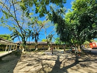
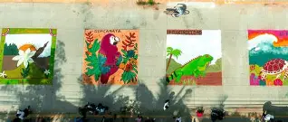
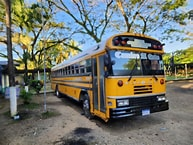

| 🏠INICIO | 🏠HISTORIA |
El Instituto Gubernamental Santiago Riera Vásquez es una de las instituciones educativas más reconocidas del municipio de Omoa. Su historia está estrechamente ligada al desarrollo educativo, social y cultural de la comunidad, ya que durante más de cinco décadas ha contribuido a la formación de miles de jóvenes de la región.
La institución fue fundada en 1970 con el propósito de ampliar las oportunidades de educación media para los estudiantes de Omoa y de las comunidades cercanas. En aquella época, muchos jóvenes tenían dificultades para continuar sus estudios después de la educación básica debido a la escasez de centros de enseñanza secundaria en la zona. La creación del instituto representó un importante avance para el municipio, permitiendo que más estudiantes accedieran a una formación académica de calidad sin tener que trasladarse a otras ciudades.
Durante sus primeros años, el instituto funcionó con recursos limitados, pero gracias al esfuerzo conjunto de docentes, estudiantes, padres de familia y autoridades locales, fue creciendo tanto en infraestructura como en matrícula estudiantil. Con el paso del tiempo se construyeron nuevas aulas, laboratorios y espacios destinados a fortalecer el proceso de enseñanza-aprendizaje.
A medida que aumentaban las necesidades educativas de la población, el instituto amplió su oferta académica. Además de impartir el ciclo común de educación media, incorporó diversas modalidades de bachillerato orientadas a preparar a los estudiantes para el mercado laboral y para continuar estudios universitarios. Entre las carreras ofrecidas destacan el Bachillerato Técnico Profesional en Informática, Administración de Empresas, Contaduría y Finanzas, Electricidad y el Bachillerato en Ciencias y Humanidades.
A lo largo de su trayectoria, el Instituto Santiago Riera Vásquez se ha distinguido no solo por su labor académica, sino también por su participación activa en actividades culturales, deportivas y comunitarias. Los estudiantes han representado al municipio en concursos, desfiles, eventos artísticos y proyectos de servicio social, fortaleciendo los valores de responsabilidad, solidaridad y compromiso con la comunidad.
Una de las tradiciones más importantes asociadas al instituto es la elaboración de las coloridas alfombras de aserrín, una manifestación artística y cultural que ha contribuido a preservar las costumbres locales. Esta actividad reúne a estudiantes y docentes en un esfuerzo creativo que promueve el trabajo en equipo y el orgullo por la identidad cultural de Omoa.
Durante más de cincuenta años de funcionamiento, el instituto ha formado generaciones de profesionales, técnicos, emprendedores y líderes comunitarios que han aportado al desarrollo de Honduras. Muchos de sus egresados se han destacado en diferentes campos, demostrando la importancia de la educación como herramienta de progreso personal y social.
En la actualidad, el Instituto Gubernamental Santiago Riera Vásquez continúa siendo un referente educativo en la región norte del país. Su misión sigue siendo brindar una educación integral que combine conocimientos académicos, formación técnica y valores humanos, preparando a los jóvenes para enfrentar los retos del mundo moderno y contribuir al desarrollo de sus comunidades.
La historia del Instituto Gubernamental Santiago Riera Vásquez es una historia de esfuerzo, crecimiento y servicio a la educación. Desde su fundación en 1970 hasta nuestros días, la institución ha desempeñado un papel fundamental en la formación de la juventud de Omoa, consolidándose como un símbolo de superación, compromiso y excelencia educativa para las generaciones presentes y futuras.


